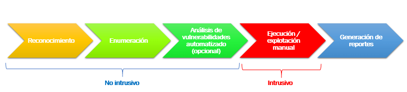

Introducción
Recordatorio de conceptos básicos
Un pentesting o test de intrusión puede ser definido como una forma legal y autorizada de localizar y "explotar" satisfacotriamente sistemas informáticos con el propósito de hacerlos más seguros.
El proceso incluye un sondeo en busca de vulnerabilidades así como proporcionar una serie de pruebas de concepto de los ataques para así demostrar que las vulnerabilidades son reales.
Un adecuado pentest siempre acaba con una serie de recomendaciones específicas para solucionar los problemas que se han descubierto en la prueba. La idea general es encontrar problemas de seguridad usando las mismas herramientas y técnicas que un atacante. Estos descubrimientos podrán ser mitigados antes de que un cibercriminal real abuse de ellos.
Los test de intrusión suelen conocerse de varias maneras:
- Pentesting
- PT
- Ethical hacking
- White hacking
- Offensive security
- Red teaming
NO es lo mismo un pentest que un análisis de vulnerabilidades.
Fases de un pentest
Un Penetration Test comprende múltiples etapas con diferentes tipos de actividades en distintos ámbitos y entornos. La profundidad con que se lleven a cabo las actividades dependerá de ciertos factores, entre los que se destaca el riesgo que puede generar hacia el cliente alguno de los métodos que se apliquen durante la evaluación.
Se establece un previo acuerdo con el cliente para llevar a cabo las diferentes fases del análisis. Dependiendo de la fuente consultada, el nombre o algunos detalles de las fases pueden diferir, pero en rasgos generales pueden nombrarse:
-
Fase de reconocimiento: Posiblemente, esta sea una de las etapas que más tiempo demande. Asimismo, se definen objetivos y se recopila toda la información posible que luego será utilizada a lo largo de las siguientes fases. La información que se busca abarca desde nombres y direcciones de correo de los empleados de la organización, hasta la topología de la red, direcciones IP, entre otros. Cabe destacar que el tipo de información o la profundidad de la pesquisa dependerán de los objetivos que se hayan fijado en la auditoría.
-
Fase de escaneo: Utilizando la información obtenida previamente se buscan posibles vectores de ataque. Esta etapa involucra el escaneo de puertos y servicios. Posteriormente se realiza el escaneo de vulnerabilidades que permitirá definir los vectores de ataque.
-
Fase de enumeración: El objetivo de esta etapa es la obtención de los datos referente a los usuarios, nombres de equipos, servicios de red, entre otros. A esta altura de la auditoría, se realizan conexiones activas con el sistema y se ejecutan consultas dentro del mismo.
-
Fase de acceso: En esta etapa finalmente se realiza el acceso al sistema. Esta tarea se logra a partir de la explotación de aquellas vulnerabilidades detectadas que fueron aprovechadas por el auditor para comprometer el sistema.
-
Fase de mantenimiento de acceso: Luego de haberse obtenido el acceso al sistema, se busca la manera de preservar el sistema comprometido a disposición de quien lo ha atacado. El objetivo es mantener el acceso al mencionado sistema perdurable en el tiempo.


Se usan muchas y muy diferentes herramientas, incluso dependiendo del pentester o analista de seguridad, para cada fase. En las siguientes secciones nos centraremos en el archiconocido escáner de puertos Nmap que, como su nombre hace pensar, se utilizaría en la fase de escaneo, tras haber recopilado la mayor cantidad de informaciónd el objetivo.